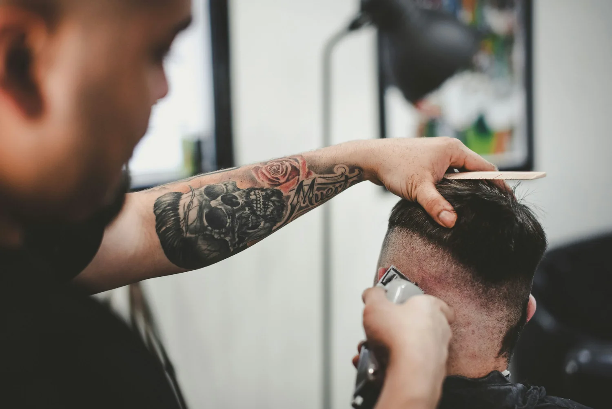
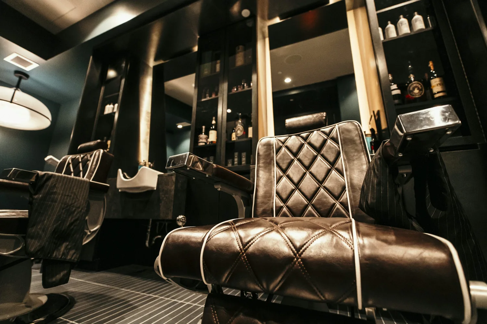
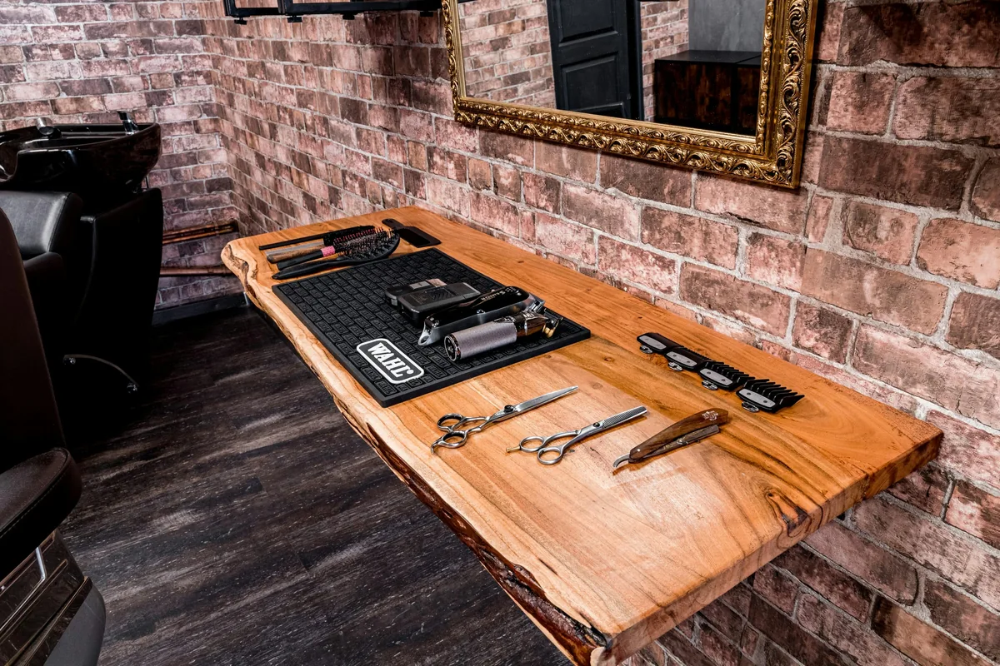

0140 min
Corte
Clásico, a tijera o con degradado. Un corte que va con vos, terminado a tu estilo.
- Asesoramiento de estilo
- Corte y terminación
$450 UYU
Elegir corteCORDÓN · MONTEVIDEO
Un buen corte cambia el día.
Vení por tu próximo look. Quedate por el buen rato.
Probá la experiencia. Las consultas son simuladas.

01 / LO QUE HACEMOS
Elegí tu plan. Nosotros cuidamos los detalles.
Precios de ejemplo en pesos uruguayos (UYU).
Clásico, a tijera o con degradado. Un corte que va con vos, terminado a tu estilo.
$450 UYU
Elegir corteTodo en una visita. Equilibramos tu corte y tu barba para que cada detalle cierre.
$650 UYU
Elegir comboForma, definición y prolijidad. Tu barba, con líneas que acompañan tu cara.
$400 UYU
Elegir barba02 / LA EXPERIENCIA TRAZO
El ritual de bajar un cambio.
Buena charla. Buen ambiente. Tiempo para vos.


Galería de inspiración con fotografías de Unsplash. No representa un local ni trabajos reales de TRAZO.
03 / POR EL BARRIO
Un corte antes de salir. Una pausa en la semana.
Tu próxima parada, en Montevideo.
Cordón · Montevideo, Uruguay
Ubicación ilustrativa. Esta barbería no tiene un local real.
Ver el barrio en Google Maps (abre otra pestaña)Atención con reserva previa.
Consultar un horarioEL PRÓXIMO CAMBIO EMPIEZA ACÁ
Elegí tu servicio y prepará tu consulta.
Así de simple podría ser tu próxima reserva.
Demo interactiva. No envía mensajes ni confirma turnos.